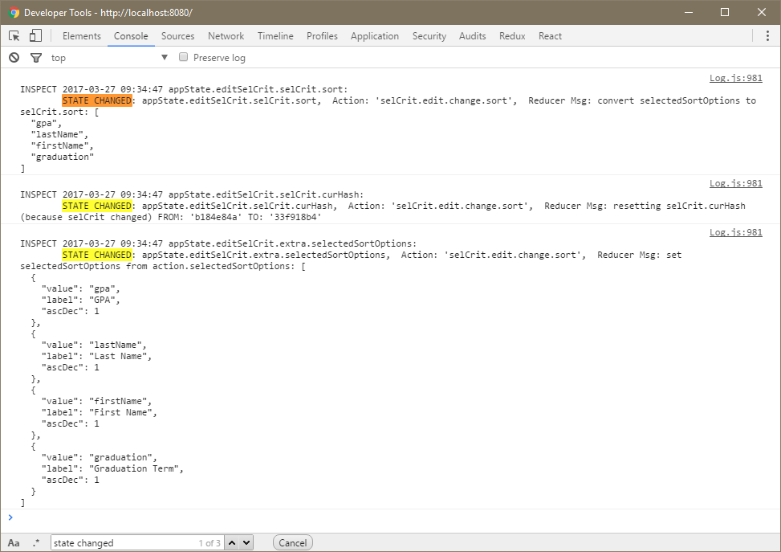

As a concrete example of extending astx-redux-util, let's explore a real-world logging extension. This example is taken directly from my GeekU app (a sandbox project I use to study various technologies and frameworks).
As it turns out, reducerHash is a very central component to
most state changes. An overwhelming majority of time that state
changes, it is accomplished by a handler that passes through reducerHash. In other words the reducerHash is a clearing
house for most state changes. In addition, reducerHash has a
distinct advantage of knowing several unique operational aspects, such
as:
- whether a handler wishes to operate on the state
- and the before/after state of a handler operation
As a result, reducerHash can play a key roll in implementing a
centralized reducer-based logging utility. The logging extension
shown here achieves the following advanced characteristics:
- a central location to log reduction-based probes
- promotes a standardized format for reduction-based probes
- dynamically alters the logging probe level based on whether the state has changed or not
This last point is a key feature. The probe's logging level is dynamically determined, based on whether the state has changed, and/or whether a reducer-specific handler wishes to communicate some information. The advantage of this dynamic is that it allows logging filters to be configured at a very high-level (i.e. for ALL reducers) with minimal output, because the INSPECT level focuses exclusively on reducers that have changed state. This is a VERY USEFUL feature!
Logging levels that are used are:
INSPECT: monitor state changes only
DEBUG: includes explicit reducer logic regardless of state changes
... monitors WHICH reducer reasoned about an action
TRACE: includes ALL reducer enter/exit points
... NOT much value: shows ALL state reducerSideBar: Logging
While logging may not be as fashionable as it once was, I believe that logging can provide valuable insight into both development and production diagnostics.
When it comes to state changing diagnostic tools, utilities such as redux-devtools provide invaluable insight into state changes, and can be used without any tooling in your application code. With that in mind, logging (when done right) can provide additional insight into "why" a state change occurred.
There are many logging utilities available. A few features to consider in your evaluation:
- filterable probes, allowing each module to have an identity that is filterable
- interactive configuration (out-of-the-box)
- efficient pruning (minimizing probe overhead)
- configurable
- filter levels
- output format
- output destination
- etc.
Extending reducerHash
Our logging extension wraps reducerHash as follows
(astx-redux-util_loggerPolyfill.js):
// value-added reducerHash.withLogging()
// ... a wrapper TO reducerHash() - a higher-order function (HOF)
// - WITH an additional parameter:
// * log: {Log} the log to use in emitting reducer-based probes
// NOTE: the log's filterName is assumed to be the state element name
AstxReduxUtil.reducerHash.withLogging = (log, ...reducerHashArgs) => {
// validate the supplied log parameter
assert(log.reducerProbe,
'AstxReduxUtil.reducerHash.withLogging() requires a log parameter with a log.reducerProbe() method.');
// invoke the original reducerHash()
const reducerFn = AstxReduxUtil.reducerHash(...reducerHashArgs);
// expose actionHandlers ... used in additional logging characteristics
const actionHandlers = reducerHashArgs[0];
// wrap the resultant reducerFn to apply our value-added logging
return (...reducerArgs) => {
const state = reducerArgs[0];
const action = reducerArgs[1];
// invoke the original reducerFn()
// NOTE1: The es6 rest syntax accommodates astx-redux-util's
// additional "originalReducerState" argument
// NOTE2: Result (via this extension) is expected to be:
// [nextState, logMsgFn|null]
const reducerResult = reducerFn(...reducerArgs);
const handlerInvolved = actionHandlers[action.type] ? true : false;
const [nextState, logMsgFn] = handlerInvolved
? reducerResult
: [reducerResult, null]; // pass-throughs return the same state
// (i.e. NOT wrapped in array)
// emit our standardized reducer-based logging probe
log.reducerProbe(action, state!==nextState, logMsgFn);
return nextState;
};
};The inline comments should be self-explanatory, but here are some high-level points of interest:
The
withLoggingextension is cataloged on thereducerHashfunction itself, making it directly available from the 'astx-redux-util' import. You may choose to make this it's own separate module.The logging process requires addition information (i.e. the log object) which is passed as a parameter, along with the
reducerHashparameters. The log's filterName is assumed to be the state element name.The wrapper invokes the underlying
reducerHashfunction, and in turn, wraps the created reducer function.The reducer wrapper is where the real enhancement is implemented.
The expectations of each handler is enhanced by allowing it to promote BOTH the nextState, along with a logging probe (which makes up part of the overall probe). An array is used to accumulate both these pieces of information.
The logging probe is generated through the enhanced log.reducerProbe() method (detailed next).
log.reducerProbe()
We also polyfill our Log object with the log.reducerProbe() method
that standardizes ALL reducer-related logging probes
(astx-redux-util_loggerPolyfill.js):
Log.prototype.reducerProbe = function(action, stateChanged, reducerMsgFn) {
const logLevel = (stateChanged)
? Log.INSPECT // state change
: (reducerMsgFn)
? Log.DEBUG // no state change, but app-specific logic
: Log.TRACE; // no state change, and no app-logic
// emit the "dynamic" logging probe
this.log(logLevel, ()=> {
const stateChangedMsg = stateChanged
? 'STATE CHANGED'
: 'STATE UN-CHANGED';
const reducerMsg = reducerMsgFn
? `, Reducer Msg: ${reducerMsgFn()}`
: '';
// ex: STATE CHANGED: appState.editSelCrit.extra.fieldOptions, Action: 'selCrit.edit', Reducer Msg: set fieldOptions from action
return `${stateChangedMsg}: ${this.filterName}, Action: '${action.type}'${reducerMsg}`;
});
};A key aspect passed to this method is an indicator of whether the state has changed, which dynamically alters the logging level, as follows:
INSPECT: monitor state changes only
DEBUG: includes explicit reducer logic regardless of state changes
... i.e. monitor WHICH reducer reasoned about an action
TRACE: includes ALL reducer enter/exit points
(NOT much value, shows ALL state reducer)Usage
From a usage perspective, simply replace reducerHash() invocations
with reducerHash.withLogging() and pass the appropriate log
parameter in addition to the reducerHash arguments.
The following reducer is the real code that our A Most Excellent Example was derived from (conceptually replace widget with
selCrit). The actual code can be found at
appState.editSelCrit.selCrit.js
(all reducers are found at
GeekU/src/client/state).
import * as Redux from 'redux';
import * as AstxRedux from 'astx-redux-util';
import {AT} from '../actions';
import SelCrit from '../../shared/domain/SelCrit';
import Log from '../../shared/util/Log';
import placebo from './placeboReducer';
import name from './appState.editSelCrit.selCrit.name';
import desc from './appState.editSelCrit.selCrit.desc';
import fields from './appState.editSelCrit.selCrit.fields';
import sort from './appState.editSelCrit.selCrit.sort';
import filter from './appState.editSelCrit.selCrit.filter';
import distinguishMajorSortField from './appState.editSelCrit.selCrit.distinguishMajorSortField';
const log = new Log('appState.editSelCrit.selCrit');
const log4curHash = new Log('appState.editSelCrit.selCrit.curHash');
export default AstxRedux.joinReducers(
// FIRST: determine content shape (i.e. {} or null)
AstxRedux.reducerHash.withLogging(log, {
[AT.selCrit.edit]: (selCrit, action) => [action.selCrit, ()=>`set selCrit from action.selCrit: ${FMT(action.selCrit)}`],
[AT.selCrit.edit.close]: (selCrit, action) => [null, ()=>'set selCrit to null'],
}),
AstxRedux.conditionalReducer(
// NEXT: maintain individual selCrit fields
// ONLY when selCrit has content (i.e. is being edited)
(selCrit, action, originalReducerState) => selCrit !== null,
AstxRedux.joinReducers(
Redux.combineReducers({
_id: placebo,
key: placebo,
userId: placebo,
itemType: placebo,
lastDbModDate: placebo,
name,
desc,
fields,
sort,
distinguishMajorSortField,
filter,
dbHash: placebo,
curHash: placebo,
}),
AstxRedux.conditionalReducer(
// LAST: maintain curHash
// ONLY when selCrit has content (see condition above) -AND- has changed
(selCrit, action, originalReducerState) => originalReducerState !== selCrit,
(selCrit, action) => {
const priorHash = selCrit.curHash;
selCrit.curHash = SelCrit.hash(selCrit); // OK to mutate (because of changed instance)
log4curHash.reducerProbe(action,
priorHash !== selCrit.curHash,
()=>`resetting selCrit.curHash (because selCrit changed) FROM: '${priorHash}' TO: '${selCrit.curHash}'`);
return selCrit;
})
)
), null); // initialStateNotice:
By using
reducerHash.withLogging()we tap into our centralized reducer-based logging utility.Each reducerHash handler, now returns both the nextState along with a logging probe (wrapped in an array).
The
log4curHash.reducerProbe()can also be used outside of reducerHash() control (promoting standardized reducer-based logging probes anywhere).
Demo
By way of demonstration, a picture is worth a thousand words. Our logger has a hidden easter egg that when invoked, activates an interactive logging configuration dialog.

By setting our appState root filter to INSPECT, our logging probes are limited to just the reducers that have changed state:
